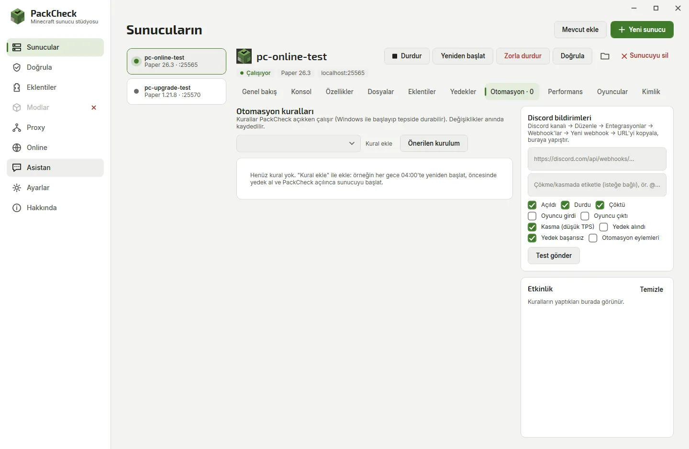

PackCheck › Minecraft server automation
Minecraft Server Automation: Restarts, Backups, Crash Recovery
A home server is much nicer when it looks after itself. PackCheck's Automation tab runs rules for each server while the app sits in the tray.

Step by step
- Open the Automation tab. Select the server and open Automation.
- Add the recommended setup. One click adds: start when PackCheck opens, restart after a crash, back up at 03:30 and restart at 04:00.
- Adjust the rules. Change times and days, the countdown players see, or add commands, announcements, low TPS or memory warnings, or stop-when-empty.
- Chain servers. Use When a server starts to start the lobby 10 seconds after the proxy, or stop it when the proxy crashes.
- Start with Windows. Turn on Start with Windows in Settings so the server comes back after every reboot.
Setting up a server for the first time? Follow how to host a Minecraft server on Windows.
Available rules
| Rule | What it does |
|---|---|
| Start when PackCheck opens | Brings the server up after a reboot |
| Restart after a crash | Up to N times per hour; manual stops are respected |
| Scheduled restart | At a time of day, with a chat countdown |
| Scheduled backup | Saves the world and makes a zip backup |
| Scheduled command / announcement | Every N minutes or at a time |
| Low TPS / high memory | Warns or restarts when it lasts too long |
| Stop when empty | Saves power when nobody plays |
| When a server starts, stops or crashes | Start, stop, restart, back up, run a command or send a message, after a delay |
| When players reach a number | Do something once at that count |
Questions
How do I restart a Minecraft server automatically every day?
Add a Scheduled restart rule with the time and an optional countdown; players get a chat warning before it restarts.
Can the server restart itself after a crash?
Yes, the Restart after a crash rule starts it again, with a limit per hour so a broken server does not loop forever.